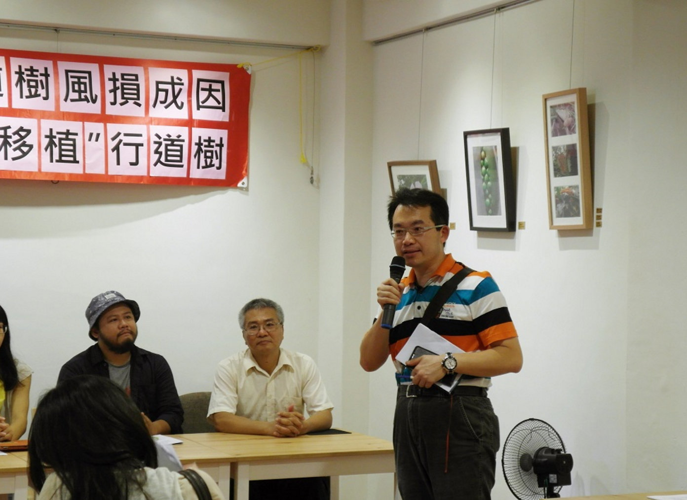
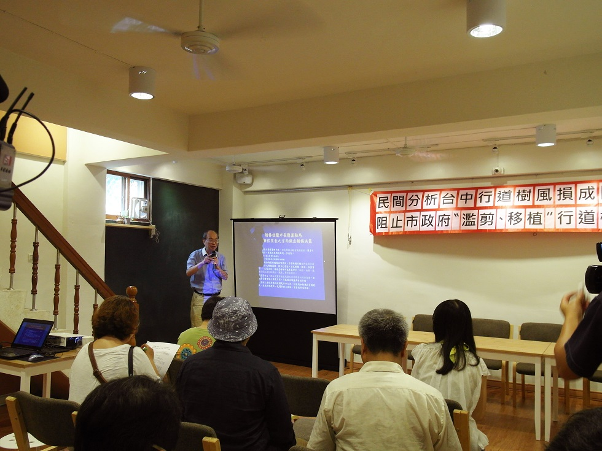

阻止台中市政府「濫剪、移植」行道樹
護樹協會 Auguest 21, 2015
颱風後，民間分析台中市行道樹風損成因
阻止台中市政府「濫剪、移植」行道樹 記者會
今天由生態學會、護樹協會、新環境促進聯盟及主婦協會共同召開記者會，呼籲政府應重視行道樹倒的真正原因，阻止亂剪、亂移的問題。
台灣每年都會有颱風過境，過去倒掉的樹木不計其數，每當颱風來大家最怕的除了土石流、農損、淹水，再來就是風倒木。但是我們政府機關如何因應颱風期間的樹木問題呢？大幅度修枝，跟斷頭修剪成了官方的標準防颱措施。
台中市大榮東西街有著名的綠蔭河溝，兩旁的樹木枝葉茂盛，賞心悅目。有賴張豐年醫師長時間監督政府在大榮東西街的修剪狀況，否則這條街不可能有現今的美景。

大容東西街的問題是里長跟住戶都恐懼颱風來樹會倒，所以一定要修剪。原本里長透過議員要求市政府前來高空修剪，幸好及時阻擋，才免於一場剪樹災難。
張醫師指出，樹木會依據環境條件而生長成最適合自己、最穩固的姿態。像是在迎風面的樹木會順著風向、風速，使枝葉有彈性地生長。若是胡亂修剪不只傷害樹木，也有可能造成枝條脆弱斷裂，危及行人。要是有風損反覆造成枝條斷裂，也要觀察是否是因為風切、風口的關係，再對症下藥解決問題。大多數的人還停留在樹大招風的迷失裡，應該是里長跟承辦人員要熟悉各地勢地形，讓樹木搭配環境生長，不隨意大幅修剪才是對樹木健康，也讓當地民眾安全的做法。
台中市的玉門路以及台灣大道沙鹿段因為電纜及行道樹並行，缺乏整合，台電一直以來都對於過高、妨礙電線的樹木進行強剪、截頂修剪，造成樹勢衰敗。生態學會也呼籲市府應實施「電纜地下化」，不要再殘害無辜的行道樹。
生態學會也指出，台中市政府應訂出明確的「行道樹保護的公務員績效指標」，以此做為業務承辦人重要的升遷考核依據，相關績效定期公開說明，讓全民監督。
希望政府以大容東西街的狀況做為範本，了解當地的樹種、樹勢、以及生長環境搭配樹型的狀況，確實以正確的方式保護兩旁的樹木，不要再過度修剪，並解決風力造成的問題。如此一來，樹木健康、茂密的大容東西街便可以做為護樹模範，讓各地做為借鏡: 健康的樹木及人類的安全是可以並存的。
蘇迪勒啟示錄 -- 台中大容溝行道樹 https://goo.gl/SmBvh2